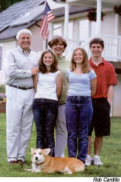
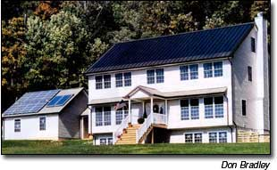
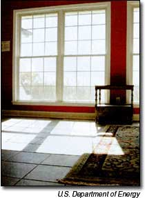
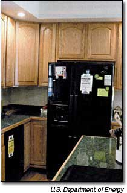

When Alden Hathaway told his wife, Carol, that he wanted to build a totally self-sufficient, solar-powered home for their family of five, she feared that it was the end of life as she knew it: She wasn't ready to give up her clothes dryer and dishwasher to conserve energy, along with her morning ritual of curling her hair.
Carol knew her husband always had been a little weird about electricity. For their first date, he took her on a romantic drive through the countryside - to check out high-voltage transmission lines. Now he feared he was about to go overboard - and take the entire family with hint.
"I won't he hanging all our clothes on a line, honey, and I certainly won't be parting with my heat rollers." she told her husband.
In the end, he built his solar dream home and she got to keep her dishwasher clothes dryer and, yes, even the heat rollers for her hair.
Alden's idealism and Carol's pragmatism turned out to be the perfect combination In the summer of 2001, the couple built a House that satisfied them both: spacious, fully solar-powered, located in a choice neighborhood and replete with plug-in creature comforts including all the gadgetry coveted by their digital-era children: Tripp, 15; Mary, 13; and Megan, 12.
The Hathaways teamed up with Don Bradley, a builder and developer whose company, Solar Strategies, is based in Philadelphia, to design a colonial-style house,with inconspicuous rooftop solar panels and a full suite of energy-efficient appliances. The result, on a 4.8-acre site in northern Virginia near Purcellville, is a house so commodious, cutting-edge and cost-effective that it's at the vanguard of a much-needed, larger movement: the growth of solar suburbia.
Loudoun County, Virginia - a patch-work of rolling green pastures, antebellum farmhouses, vegetable gardens and duck ponds - is the archetype of old-time American charm. It also has neighborhood homeowner associations with rigorous building codes that restrict the external decor of every new house. One association in the county rejected the Hathaways proposal as soon as it heard the word "solar," doubtful that the Hathaways could build something in keeping with the neighborhood aesthetic.
"Most people assume a solar house is a spaceship-looking thing with boxy modules and antennas sticking out of it, or a junky eco-shock in the woods," says Alden. "We wanted the design of our home to prove that solar can be attractive to the masses."
They found a nearby property with fewer restrictions and, with careful design decisions, were able to make the tech nology practically invisible. Bradley used thin-film photovoltaic (PV) modules from a company called Uni-Solar. (For more on thin-film PV see "Go Solar & Be Secure," February/March 2002.) The flexible material can be cut, peeled and seamlessly pasted onto a generic metal roof. For maximum solar production, be positioned the house to face clue south, angling the roof to capture the arc of the sun's movement, and created a breezeway between the house and the garage to eliminate any shading of the rooftop panels.
Bradley also minimized the house's energy consumption. He and the Hathaways started with a prefabricated model from Design Homes in Bloomsburg, Pennsylvania [www.designhomesllc.com; (800) 242-5377], then customized it with highly insulated malls, windows and ductwork.
Energy-efficient choices include compact fluorescent bulbs on motion-sensing timers, an Energy Star Whirlpool refrigerator, a horizontal-axis Whirlpool Duet clothes washer and a Jenn-Air convection oven.
Because Carol and the three young Hathaways aren't exactly abstemious about their electricity use - the house has four computers, three televisions, two Nintendo systems, three stereos and a full complement of domestic;appliances - Alden built a hefty 6-kilowatt solar energy system that spans 1,000 square feet on the rooftops of tile house and garage.
In addition to the photovoltaic panels, the house uses other renewable technologies: Solar thermal panels heat the water and a geothermal system provides space heating and air-conditioning. The latter is a labyrinth of pipes sunk 5 feet underground, where the earth is a constant temperature of 58 degrees. A heat-transfer fluid pumped through tile pipe system heats the house in the winter and cools it in the summer.
In August 2001, the Hathaway family moved into their new home. 'With the Department of Energy monitoring daily electricity use, they have completed a successful test run in one of America's first "zero net-energy" homes.
A zero net-energy home produces its own power. usually from solar panels, but is connected to the electricity grid used by traditional houses. It draws power from tile utility whenever necessary - the sun isn't shining - and pumps its own "green" electricity hatch into the grid when it produces a surplus. It s a zero sum-game: Nights balance out against days, sunny summer months balance out against dark winter months. Over a full year, a zero net-energy house produces at least as much electricity as it consumes.
Next to car and mortgage payments, energy bills are one of the largest household expenses for most U.S. families today. The average annual energy bill for a detached house is $1,570, according to the DOE. The Hathaway house, in contrast, has an annual energy bill of $300, or $25 a month, which includes the cost of the connect fee.
Of course, the energy-saving technology doesn't come free. But the Hathaways developed a long-term financing plan to manage the added costs. In total, the energy technology cost an additional $45,000 (the house cost $320,000), but increased the monthly mortgage payments by only 10 percent. So far, their savings in energy bills is about $260 a month, which offsets the increased payments.
Alden, currently director of the Green Power Program at the Washington-based Environmental Resources Trust, also calculates that his hybrid gas-electric car, a Toyota Prius, saves him more than $2,900 a year in gasoline costs.
"We can raise our flags and put our hands over our hearts," says Carol, "but the best way we Americans can fight terrorism and the Middle Eastern leaders supporting terrorism is to eliminate our need for their major export [oil]."
The Hathaways' economic savings translates into environmental savings, too: Factoring in both their clean-energy system and hybrid gas-electric car, the family has reduced their average annual carbon dioxide emissions by 40 percent. And, best of all, they say, the savings come without concessions in performance and without sacrificing their standard of living.
Alden describes his family's lifestyle as "about as normal as they come," but admits his home is something of a live-in laboratory. He and son Tripp have been monitoring and experimenting with the family's electricity use for years.
When he was in sixth grade, Tripp calculated the energy use of every appliance in the house, from the water boiler to his clock radio. "I'd get a base line on how much energy we used on an average day," says Tripp. "Then if Mom was getting ready to cook grilled cheese sandwiches, I'd check the meter voltage to see how much juice the stove used."
Alden and the children also spent several summers in Africa installing solar systems on homes, schools and community centers through the nonprofit Solar Light for Africa program they helped to develop through several churches.
Though the family's keen energy awareness isn't exactly typical, their shift toward energy independence does reflect a nationwide trend. The demand for solar panels across the country has been increasing at more than 20 percent per year for the past four years. according to the DOE. During that period, the cost of solar technology has plunged nearly 50 percent, thanks to manufacturing innovations that make more mainstream applications possible.
Take The Home Depot, for instance. That company s test-marketing of AstroPower solar products in three California stores was so .successful that it has expanded the products' distribution to 61 stores in California, Delaware, New and New Jersey - a move that a company spokesman called "a - hopping expansion, even for us."
Shea Homes, one of the country's largest home construction companies, has introduced a solar home that is now on back-order in California. The International Brotherhood of Electrical Workers has made solar installation and maintenance training available to all 780,000 members.
According to David Garman assistant secretary of the DOE's Office of Energy Efficiency and Renewable Energy, 18 million new houses will be built in this country between now and 2010. The DOE is researching ways to reduce energy use in those new homes by up to 50 percent; it plans to encourage consumers by establishing special incentives for new energy-efficient homes and appliances, as well as photovoltaic systems and solar water heaters. Garman says data taken from the Hathaways zero net-energy house is helping to make this goal possible.
The DOE is now helping coordinate zero net-energy building projects in more than a dozen cities across the country, including San Francisco, Las Vegas, Orlando, Austin and Tucson.
"As the nation cries out for energy independence," says Bradley, "going solar is really becoming the ultimate patriotic act."
Such an effort is certainly timely, given today's political and environmental concerns. "If just 10 percent of American families were to do what our family has done, we could wipe out our dependence on Iraqi oil and surpass the original Kyoto goals for reducing greenhouse gas emissions," says Alden. We're offering a simple, grassroots Solution to the biggest challenge of our time."
The Hathaways' 3,000-square-foot Patriot Home saves enough in annual energy costs to finance the photovoltaic system and other cutting-edge energy technologies.
Passive-solar design: Direct-gain passive design with cement board and the floors used as thermal mass. South-facing low-e windows, 2-foot-wide overhangs. Cross ventilation with operable windows. Sun-Tube skylight provides daylighting in master bathroom.
Insulation: R-45 ceiling, R-24 exterior walls.
Photovoltaics: The Solar Patriot's family of five uses 24 kilowatt-hours of electricity per day, compared to the average of 55 kwh for conventional houses of its size. A 4-kilowatt Uni-Solar thin-film array on the house's roof and a 2-kw array of BP Solar modules on the garage roof meet most of their electricity needs. Eight 200-amp-hour batteries provide backup power. When state regulations allow, the Hathaways expect to sell some of their green energy back to the utility company.
Heating and cooling: ECR Technologies Earthlinked geothermal heat-pump system; Heat-N-Glow wood-burning fireplace insert.
Water heating: Closed-loop system, consisting of two 4-by-6 1/2-foot Solargenix solar panels. (In the summertime, the panels produce 90 percent to 95 percent of the family's hot water needs; in the winter, 40 percent to 45 percent.) Backup is a hot-water loop off the geothermal system.
Water conservation: Low-flow showerheads and faucets; low-flush toilets.
Other efficiency features: Ceiling fans and compact fluorescent lightbulbs.
|
 ROB CARDILLO The Hathaways (left to right: Alden, Mary, Carol, Megan and Tripp -- with Piper; aka Solar Dog) and their passive solar, photovoltaic-powered home. |
 DON BRADLEY Conventional photovoltaic (PV) panels (and solar hot water panels) are mounted on the garage. Thin-film PV modules virtually disappear on top of the house's metal roof. |
 U.S. DEPARTMENT OF ENERGY Passive-solar design strategies like large, south-facing windows and thermal mass incorporated into the floors reduce the need for supplemental heat. |
|
 U.S. DEPARTMENT OF ENERGY The Hathaways installed energy-efficient appliances in their home without giving up any modern conveniences. |
|
|